En landbrukskontoplan er en spesialisert kontoplan som er tilpasset landbrukssektorens unike behov og krav. Den tar hensyn til landbrukets særegne inntektskilder, kostnadsstrukturer og regnskapsmessige utfordringer som skiller seg fra andre næringer.
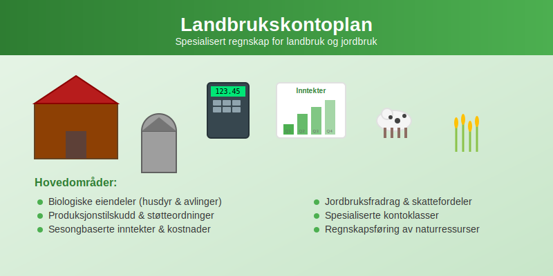
Hva er en Landbrukskontoplan?
En landbrukskontoplan er en systematisk oversikt over alle kontoer som brukes i regnskapet for landbruksvirksomheter. Den bygger på den norske standardkontoplanen, men er utvidet og tilpasset for å håndtere landbrukets spesielle forhold som:
- Produksjonstilskudd og offentlige støtteordninger
- Sesongbaserte inntekter og kostnader
- Biologiske eiendeler som husdyr og avlinger
- Jordbruksfradrag og spesielle skattefordeler
- Naturressurser og arealbruk
Særtrekk ved Landbruksregnskap
Landbruksregnskap skiller seg fra vanlig bokføring på flere områder:
- Biologisk produksjon - levende dyr og planter som endrer verdi over tid
- Værforhold - påvirker både inntekter og kostnader betydelig
- Lange produksjonssykluser - fra såing til høsting kan ta måneder
- Komplekse støtteordninger - mange ulike tilskudd og refusjoner
- Kombinert virksomhet - ofte både planteproduksjon og husdyrhold
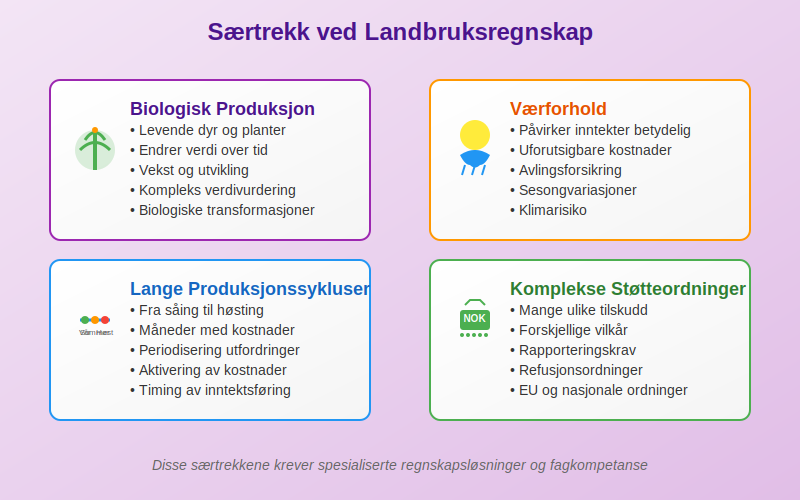
Struktur og Oppbygging av Landbrukskontoplan
Hovedklasser i Landbrukskontoplan
Landbrukskontoplanen følger den samme grunnstrukturen som standardkontoplanen, men med spesialiserte underkontoer:
| Klasse | Beskrivelse | Landbruksspesifikke Tillegg |
|---|---|---|
| 1 | Eiendeler | Biologiske eiendeler, jord, bygninger, maskiner |
| 2 | Gjeld og Egenkapital | Investeringslån, driftskreditt |
| 3 | Driftsinntekter | Salg av produkter, tilskudd, refusjoner |
| 4 | Driftskostnader | Fôr, såvarer, veterinær, drivstoff |
| 5-8 | Finansposter og skatt | Jordbruksfradrag, særskilte skatteordninger |
Detaljert Kontostruktur for Landbruk
Klasse 1: Eiendeler (Spesialisert for Landbruk)
Biologiske Eiendeler:
| Kontonummer | Kontobeskrivelse | Forklaring |
|---|---|---|
| 1100 | Storfe | Melkekyr, ammekyr, okser |
| 1101 | Melkekyr | Produserende melkekyr |
| 1102 | Ungdyr storfe | Kalver og kviger |
| 1110 | Svin | Purker, råner, slaktesvin |
| 1120 | Sau og geit | Søyer, bukker, lam, kje |
| 1130 | Fjørfe | Høner, kalkun, ender |
| 1140 | Hest | Ridhester, travhester |
Avlinger og Lagre:
| Kontonummer | Kontobeskrivelse | Forklaring |
|---|---|---|
| 1200 | Korn på lager | Hvete, bygg, havre |
| 1210 | Grovfôr på lager | Høy, ensilasje, halm |
| 1220 | Poteter på lager | Spisepoteter, settepotet |
| 1230 | Grønnsaker på lager | Ulike grønnsakslag |
| 1240 | Frukt og bær på lager | Epler, bær, andre frukter |
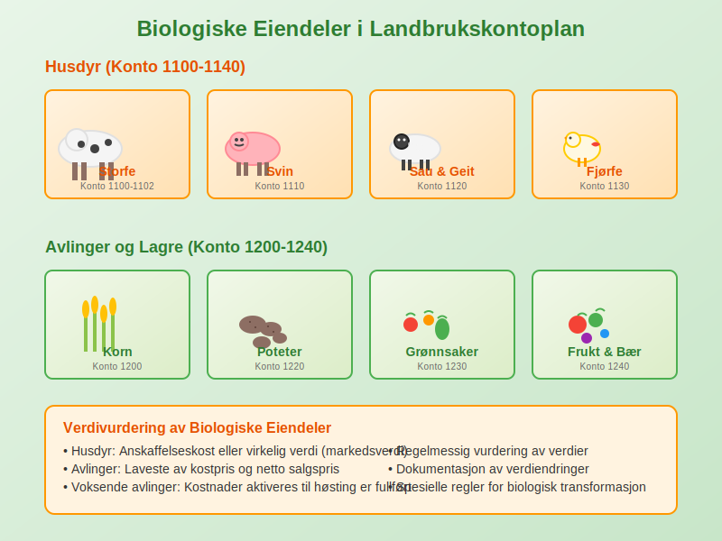
Klasse 3: Driftsinntekter (Landbruksspesifikk)
Salg av Produkter:
| Kontonummer | Kontobeskrivelse | Forklaring |
|---|---|---|
| 3000 | Salg melk | Leveranser til meieri |
| 3010 | Salg storfe | Slakt og levende dyr |
| 3020 | Salg svin | Slaktesvin og avlsdyr |
| 3030 | Salg sau/geit | Slakt og ull |
| 3040 | Salg fjørfe | Slaktekylling og egg |
| 3100 | Salg korn | Hvete, bygg, havre |
| 3110 | Salg poteter | Spisepoteter og industripoteter |
| 3120 | Salg grønnsaker | Ulike grønnsakslag |
| 3130 | Salg frukt og bær | Epler, bær, andre frukter |
Tilskudd og Støtteordninger:
| Kontonummer | Kontobeskrivelse | Forklaring |
|---|---|---|
| 3500 | Produksjonstilskudd | Husdyrtilskudd, arealstøtte |
| 3510 | Distriktstilskudd | Tilskudd for drift i distriktene |
| 3520 | Miljøtilskudd | SMIL-midler og miljøordninger |
| 3530 | Investeringsstøtte | Tilskudd til bygninger og utstyr |
| 3540 | Refusjoner | Veterinærrefusjon, transportstøtte |
| 3550 | EU-tilskudd | Direkte støtte fra EU |
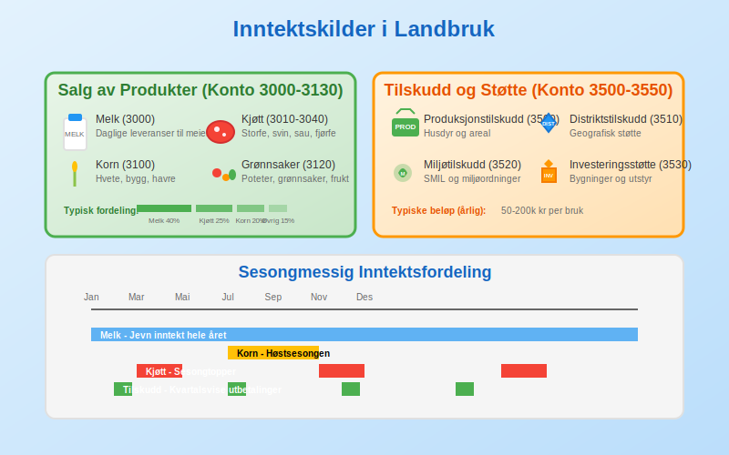
Klasse 4: Driftskostnader (Landbruksspesifikk)
Fôrkostnader:
| Kontonummer | Kontobeskrivelse | Forklaring |
|---|---|---|
| 4000 | Kraftfôr | Konsentrat til ulike dyreslag |
| 4010 | Grovfôr kjøpt | Høy, ensilasje, halm |
| 4020 | Fôrtilsetning | Mineraler, vitaminer |
| 4030 | Beite og utmarksbruk | Leie av beiteområder |
Såvarer og Plantemidler:
| Kontonummer | Kontobeskrivelse | Forklaring |
|---|---|---|
| 4100 | Såkorn | Frø til kornproduksjon |
| 4110 | Settepotet | Potet til setting |
| 4120 | Plantemidler | Gjødsel, sprøytemidler |
| 4130 | Såvarer grønnsaker | Frø og planter |
Veterinær og Helse:
| Kontonummer | Kontobeskrivelse | Forklaring |
|---|---|---|
| 4200 | Veterinærkostnader | Behandling og forebygging |
| 4210 | Medisiner | Antibiotika og andre medisiner |
| 4220 | Inseminering | Kunstig befruktning |
| 4230 | Helsekontroll | Obligatoriske helseprogram |
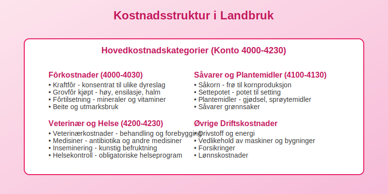
Spesielle Regnskapsområder i Landbruk
Biologiske Eiendeler og Verdivurdering
Verdivurdering av Husdyr:
Husdyr skal vurderes til:
- Anskaffelseskost - opprinnelig kjøpspris eller produksjonskost
- Virkelig verdi - markedsverdi på balansedagen
- Nedskrevet verdi - ved verdifall
Behandling av Avlinger:
- Voksende avlinger - kostnader aktiveres til høsting
- Høstede produkter - vurderes til laveste av kost og netto salgspris
- Lagertap - føres som kostnad når det oppstår
Produksjonstilskudd og Støtteordninger
Regnskapsføring av Tilskudd:
| Tilskuddstype | Regnskapsbehandling | Kontoføring |
|---|---|---|
| Produksjonstilskudd | Inntektsføres når opptjent | Konto 3500 |
| Investeringsstøtte | Reduserer anskaffelseskost | Motpost til anleggsmiddel |
| Miljøtilskudd | Inntektsføres når vilkår oppfyllt | Konto 3520 |
| Refusjoner | Reduserer relaterte kostnader | Konto 3540 |
Dokumentasjon og Oppfølging:
- Søknader - oppbevar alle søknader og vedtak
- Rapportering - følg opp rapporteringskrav
- Kontroll - forbered deg på offentlig kontroll
- Tilbakebetaling - avsett midler ved usikkerhet
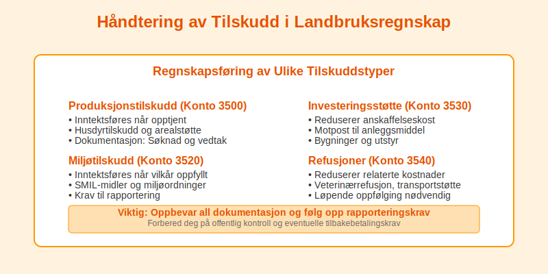
Jordbruksfradrag og Skattefordeler
Jordbruksfradrag:
Jordbruksfradrag er en særskilt skattefordel for landbruk:
- Maksimalt fradrag - 166 400 kr (2024-satser)
- Beregningsgrunnlag - nettoinntekt fra landbruk
- Dokumentasjon - krav til regnskapsføring
Regnskapsføring:
| Kontonummer | Kontobeskrivelse | Forklaring |
|---|---|---|
| 8050 | Jordbruksfradrag | Reduksjon av skattekostnad |
| 8051 | Skogfradrag | Fradrag for skogbruk |
Sesongvariasjoner og Periodisering
Håndtering av Sesongbaserte Inntekter
Melkeproduksjon:
- Månedlige leveranser - jevn inntektsføring
- Kvalitetstillegg - periodiseres over året
- Prisutjevning - håndteres som periodiseringer
Planteproduksjon:
- Såing til høsting - kostnader aktiveres
- Høstesalg - konsentrert inntektsføring
- Lagersalg - jevnere inntektsfordeling
Husdyrproduksjon:
- Kontinuerlig produksjon - egg, melk
- Sesongbasert - lam, kalver
- Årlig syklus - sau, storfe
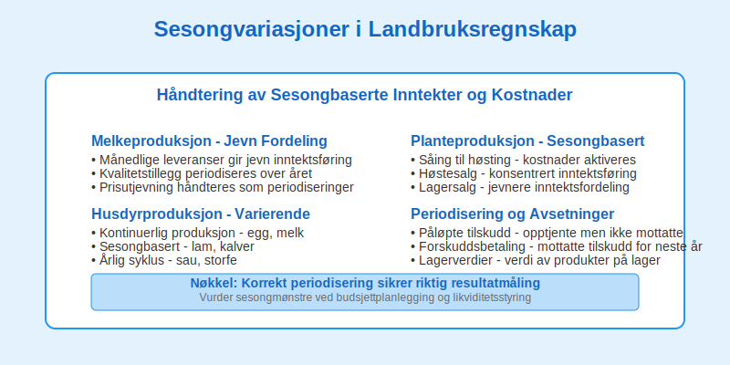
Periodisering og Avsetninger
Typiske Periodiseringer:
| Type | Beskrivelse | Regnskapsbehandling |
|---|---|---|
| Påløpte tilskudd | Opptjente men ikke mottatte | Fordring |
| Forskuddsbetaling | Mottatte tilskudd for neste år | Kortsiktig gjeld |
| Avsetninger | Forventede kostnader | Avsetning for forpliktelser |
| Lagerverdier | Verdi av produkter på lager | Omløpsmidler |
Digitale Løsninger for Landbruksregnskap
Spesialiserte Regnskapsprogrammer
Landbrukstilpassede Systemer:
- Integrerte løsninger - regnskap, produksjon, tilskudd
- Automatisk kontering - basert på transaksjonstype
- Rapportering - til myndigheter og støtteordninger
- Produksjonsoppfølging - kobling til driftsdata
Populære Systemer:
- Landbruksregnskap - spesialiserte løsninger
- ERP-systemer - helhetlige løsninger
- Skybaserte tjenester - tilgjengelig overalt
- Mobile apper - registrering i felt
Integrasjon med Andre Systemer
Datakilder:
- Tine/Nortura - automatisk import av leveranser
- Landbruksdirektoratet - tilskuddsdata
- Skatteetaten - rapportering og oppgjør
- Banker - automatisk bankavstemming
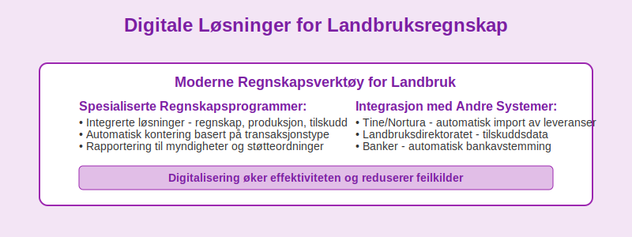
Juridiske Krav og Regelverk
Bokføringsloven og Landbruk
Spesielle Krav:
Bokføringsloven gjelder også for landbruk, men med noen særregler:
- Forenklet bokføring - for små bruk under visse grenser
- Kontantprinsipp - tillatt for mindre virksomheter
- Periodisering - påkrevd for større virksomheter
- Dokumentasjon - særlige krav til tilskuddsdokumentasjon
Skatteloven og Landbruk
Særregler:
- Jordbruksfradrag - maksimalt 166 400 kr
- Skogfradrag - for skogbruksvirksomhet
- Næringsfradrag - generelt næringsfradrag
- Avskrivningsregler - spesielle satser for landbruk
Regnskapsplikt:
| Omsetning | Regnskapsplikt | Krav |
|---|---|---|
| Under 5 mill | Forenklet | Kontantprinsipp tillatt |
| 5-70 mill | Ordinær | Periodisering påkrevd |
| Over 70 mill | Revisjon | Revisorplikt |
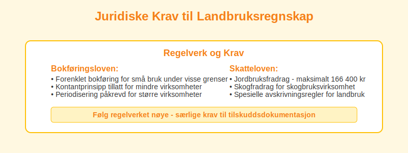
Praktiske Tips for Landbruksregnskap
Organisering av Regnskapsarbeidet
Månedlige Rutiner:
- Bilagsregistrering - løpende registrering av bilag
- Bankavstemming - månedlig avstemming
- Lagerregistrering - oppdatering av lagerverdier
- Tilskuddsoppfølging - kontroll av innbetalinger
Kvartalsvise Oppgaver:
- Mva-oppgjør - innlevering av mva-melding
- Periodisering - justering av periodiseringer
- Resultatoppfølging - analyse av drift
- Budsjettsammenligning - avvik og prognoser
Årlige Oppgaver:
- Årsregnskap - utarbeidelse av årsregnskap
- Skattemelding - innlevering til Skatteetaten
- Tilskuddsrapporter - rapportering til Landbruksdirektoratet
- Revisjonsoppfølging - hvis revisjonspliktig
Vanlige Feil og Fallgruver
Typiske Feil:
- Manglende periodisering - ikke hensynta opptjente tilskudd
- Feil lagervurdering - ikke oppdaterte lagerverdier
- Blandet privat/næring - manglende skille
- Dokumentasjon - manglende bilag og dokumentasjon
Beste Praksis:
- Løpende registrering - ikke utsett regnskapsarbeidet
- God dokumentasjon - oppbevar alle bilag
- Faglig oppdatering - følg med på regelverksendringer
- Profesjonell hjelp - bruk regnskapsfører eller revisor
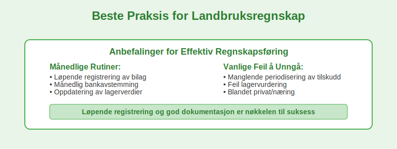
Spesialiserte Landbruksområder
Melkeproduksjon
Særlige Forhold:
- Daglige leveranser - kontinuerlig inntektsstrøm
- Kvalitetstillegg - variable priser basert på kvalitet
- Kvoteordning - begrensninger på produksjon
- Investeringer - dyre spesialiserte anlegg
Kontospesifikke Behov:
| Område | Spesielle Kontoer | Beskrivelse |
|---|---|---|
| Inntekter | 3000-3009 | Melkeleveranser, kvalitetstillegg |
| Kostnader | 4000-4099 | Fôr, veterinær, melkeutstyr |
| Anleggsmidler | 1200-1299 | Melkeanlegg, roboter, tanker |
Kornproduksjon
Karakteristika:
- Sesongbasert - såing vår, høsting høst
- Værfølsom - store årlige variasjoner
- Lagringsutfordringer - tørking og oppbevaring
- Maskinintensiv - store investeringer i utstyr
Regnskapsmessige Utfordringer:
- Kostnadspåløp - fra såing til høsting
- Lagervurdering - prissvingninger på korn
- Avlingsforsikring - håndtering av forsikringsoppgjør
- Tørkekostnader - betydelige kostnader enkelte år
Grønnsaksproduksjon
Spesielle Forhold:
- Arbeidsintensiv - høye lønnskostnader
- Kort holdbarhet - raske omsetningskrav
- Sesongarbeid - varierende arbeidskraftbehov
- Kvalitetskrav - strenge standarder
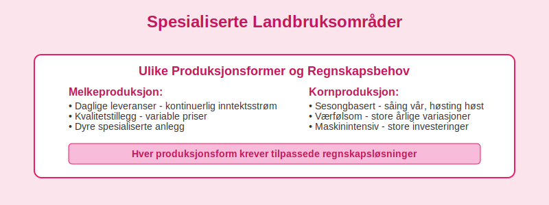
Fremtiden for Landbruksregnskap
Digitalisering og Automatisering
Teknologiske Trender:
- IoT-sensorer - automatisk datainnsamling
- Kunstig intelligens - prediktiv analyse
- Blockchain - sporbarhet i verdikjeden
- Satellittdata - overvåking av avlinger
Regnskapsmessige Konsekvenser:
- Sanntidsdata - kontinuerlig oppdatering av verdier
- Automatisk kontering - mindre manuelt arbeid
- Prediktiv analyse - bedre prognoser og budsjetter
- Integrerte systemer - helhetlig dataflyt
Bærekraft og ESG-rapportering
Nye Krav:
- Klimaregnskap - rapportering av utslipp
- Bærekraftsmål - dokumentasjon av miljøtiltak
- Sporbarhet - fra jord til bord
- Sertifiseringer - økologisk, miljøvennlig
Regnskapsmessige Utfordringer:
- Nye kontoer - for miljøkostnader og -investeringer
- Rapporteringskrav - til myndigheter og kunder
- Verdivurdering - av miljøtiltak og sertifiseringer
- Dokumentasjon - omfattende krav til sporbarhet
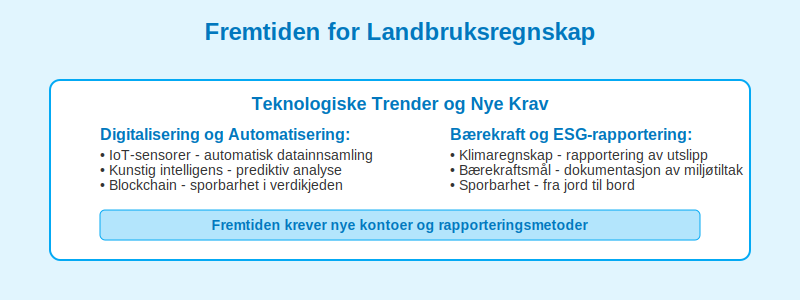
Konklusjon
En velutformet landbrukskontoplan er avgjørende for effektiv regnskapsføring i landbrukssektoren. Den må håndtere sektorens unike utfordringer som:
- Biologiske eiendeler - levende dyr og planter
- Sesongvariasjoner - store svingninger i inntekter og kostnader
- Komplekse støtteordninger - mange ulike tilskudd og refusjoner
- Spesielle skatteordninger - jordbruksfradrag og andre fordeler
Suksessfaktorer:
- Tilpasset struktur - reflekterer virksomhetens art
- Løpende oppdatering - følger regelverksendringer
- God dokumentasjon - sikrer etterlevelse av krav
- Profesjonell støtte - bruk av fagkompetanse
Ved å investere i en god landbrukskontoplan og holde seg oppdatert på regelverket, kan landbruksbedrifter sikre korrekt regnskapsføring, optimalisere skatteposisjonen og få bedre grunnlag for økonomisk styring av virksomheten.
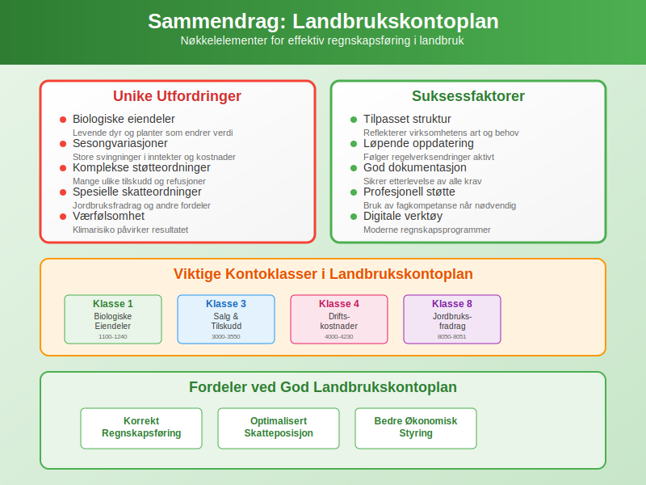